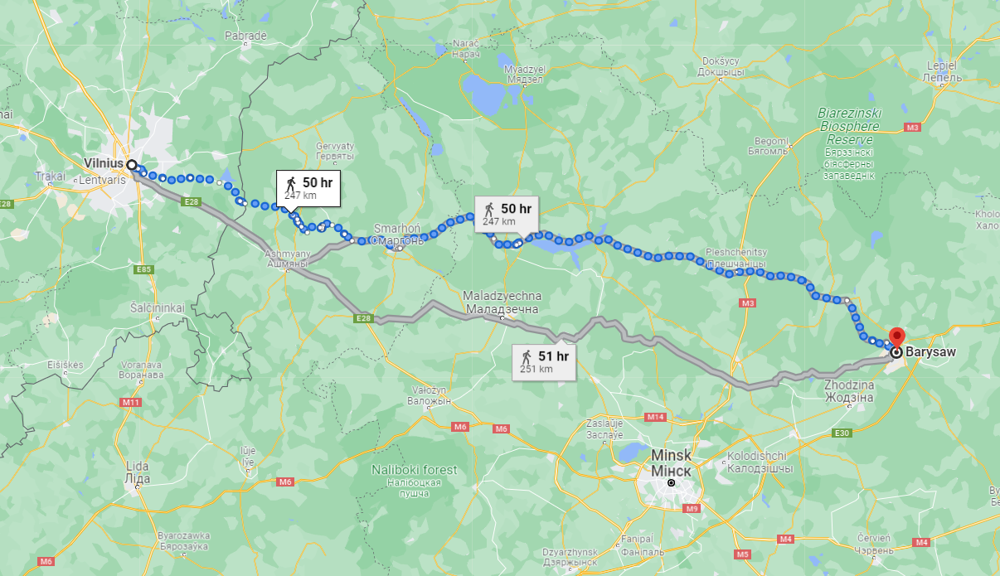
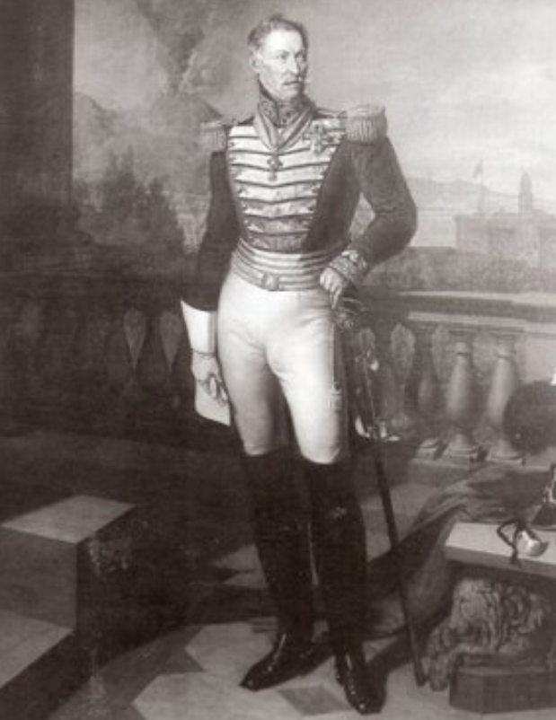
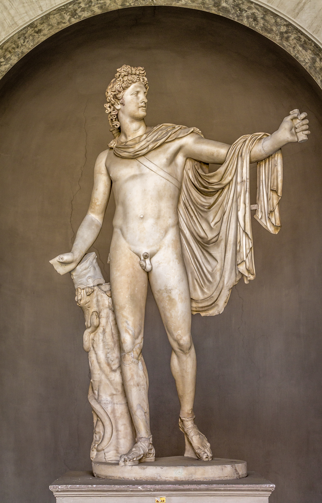
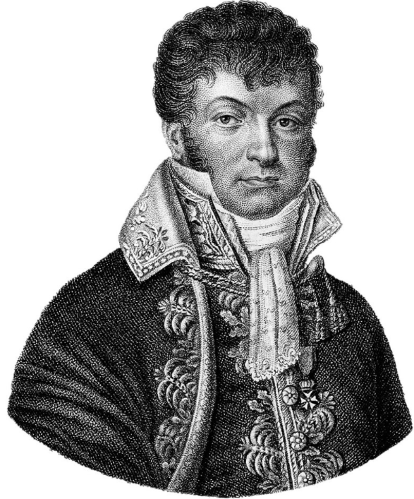

12월 6일의 비극 - 사람이 이렇게도 죽는다
게시: 2021-11-29T06:30:17+09:00
나폴레옹과 그랑다르메가 베레지나에서 삶과 죽음이 엇갈리는 몸부림을 치고 있을 때, 약 250km, 그러니까 6~7일 정도 행군거리에 있던 빌나는 꽤 평온했습니다. 빌나에 있던 마레와 호겐도르프는 나폴레옹으로부터 병력과 보급품과 말을 보내라는 독촉을 계속 받고 있었지만 그거야 나폴레옹이 떠난 이후 계속 된 것이었고, 그들은 나폴레옹이 적절한 겨울 숙영지를 찾아 약간 후퇴했다는 것은 알고 있었지만 상황이 어느 정도로 나빠졌는지는 모르고 있었습니다. 그래서 나폴레옹의 황제 즉위 기념일인 12월 2일에는 성대한 만찬과 함께 무도회도 열렸습니다. 베레지나에서 간신히 강을 건넌 나폴레옹과 직접 만나 이야기를 듣고 그의 편지를 들고 온 아브라모비츠(Abramowicz)라는 빌나 거주 폴란드 귀족이 마레를 찾아온 것도 그런 무도회 리셉션장이었다고 합니다.

(베레지나의 다리가 있던 보리소프로부터 리투아니아의 수도 빌나까지는 약 250km에 불과합니다. 대충 서울에서 대구까지의 거리입니다.) 당연히 바로 그 다음날부터 나폴레옹의 패배에 대한 소문이 시내에 쫙 퍼졌습니다. 그러나 마레와 호겐도르프는 크게 당황하지 않고 침착하게 나폴레옹의 지시를 이행했습니다. 그리고 앞서 언급한 대로, 호겐도르프는 직접 스모르곤으로 나폴레옹을 찾아가 그랑다르메를 맞이할 식량은 물론 보충병 2개 사단까지 준비가 되었다는 것을 알렸습니다. 12월 5일 저녁에 스모르곤을 떠나 밤새 말을 달린 나폴레옹은 12월 6일 오전에 빌나 외곽에 도착했으나, 시내에 입성하지는 않고, 빌나 외곽에서 1시간 정도 쉬면서 말을 교체만 한 뒤 다시 떠났습니다. 그는 떠나기 전에 그 곳으로 찾아온 마레와 잠깐 만났는데, 그야말로 그냥 마레에게 자기 할 말만 다다다 던지고 떠나버렸습니다. 나폴레옹이 마레에게 던져댄 말을 요약하면 그냥 "뮈라에게 빌나를 사수하라고 전해라"라는 것이었습니다. 이렇게 황당한 인터뷰를 마친 마레는 머리가 복잡했습니다. "어젯밤까지 뮈라와 함께 있던 폐하께서 왜 나를 통해서 뮈라에게 빌나 사수를 명하신 거지? 잠깐, 지금 빌나로 러시아군이 밀려온다는 이야기인가? 우리가 빌나를 지킬 형편이 되나?" 나폴레옹이 준비를 명한 식량의 양을 보면 빌나로 후퇴 중인 그랑다르메의 병력 수는 대충 짐작이 갔지만, 그 뒤를 쫓아 빌나로 오고 있는 러시아군의 규모는 짐작이 가지 않았습니다. 그러나 최소한 빌나 자체의 방어 태세는 나쁘지 않았습니다. 일단 식량 비축이 꽤 잘 준비되어 있었습니다. 그리고 나폴레옹에게 보고한 대로, 막 빌나에 도착한 2개 사단 약 2만의 병력이 반짝반짝 신품 머스켓 소총을 들고 있었습니다. 그리고 예비용 머스켓 소총과 탄약, 군복 등이 상당히 많이 비축되어 있었으므로 후퇴해온 그랑다르메 병력을 재편성하면 빌나 방어는 불가능할 것이 없어 보였습니다. 그러나 이 모든 긍정적인 상황은 곧 절망으로 빠져들었습니다. 시작은 의욕적인 네덜란드 출신의 행정가 호겐도르프 장군의 지시부터 시작되었습니다. 그는 후퇴해오는 그랑다르메를 맞이하고 호위하기 위해 새로 도착한 그 2개 사단을 빌나 외곽 좌우로 학익진처럼 펼쳐 전개시켰습니다. 이건 나름 괜찮은 조치였습니다. 혹시라도 미리 침투해올 수 있는 러시아 코삭 기병들을 막아내고 후퇴해오는 아군에게는 용기를 북돋아주는 역할을 할 수 있었습니다. 그러나 혹한기 작전을 해본 적이 없을 뿐더러 러시아나 폴란드 현지 사정에는 완전 깜깜했던 호겐도르프는 중대한 실수를 저지른 셈이었습니다. 이런 극한의 추위에 아무런 준비가 되어 있지 않던 병력을 빌나 성 밖에 내보낸 것은 그리 좋은 생각이 아니었습니다. 그리고 운명의 장난으로, 그렇게 독일 병사들이 두리번두리번 거리며 성 밖으로 기어나온 12월 5일 밤부터 역대급 강추위가 강습했습니다. 당시 계속 고난의 길을 걸으며 자신들이 정말 극한의 추위를 겪고 있다고 생각하던 그랑다르메 병사들도 12월 6일, 지구상의 추위에는 바닥이 없다는 것을 새롭게 느끼고 있었습니다. 이때 온도가 섭씨 마이너스 37.5도까지 내려갔습니다. 당시 살아남은 사람들의 기록을 보면 대기가 미세한 얼음조각으로 가득 차 있는 것 같다는 표현이 공통적으로 나옵니다. 이건 사람이 호흡할 때 내뱉는 숨 속에 포함된 습기가 코와 입 밖으로 나오자마자 얼어붙어서 얼음으로 변했기 때문인데, 그러니 사람들의 얼굴 주변 공기 속엔 항상 얼음이 가득한 것이 사실이었습니다. 여기서 사람들은 인간이 정말 걷다가 얼어죽을 수 있다는 것을 새로 알게 되었습니다. 여러 사람들의 수기에 종종 나오는 것이, 행군하던 병사들이 점점 동작이 느려지고 마치 술에 취한 것처럼 뒤뚱거리더니, 픽 쓰러져 죽어버리더라는 것입니다. 이렇게 쓰러져 죽은 병사들의 코나 눈에서는 종종 미지근한 피가 흘러내렸다고 합니다. 같은 날인 12월 6일, 바로 전날 빌나 외곽을 지나친 나폴레옹의 마차 안에서도 난리가 났습니다. 마멜룩 출신 시종인 루스탐의 기록에 따르면 그 날 나폴레옹의 마차 안에서도 와인병들이 깨지기 시작했습니다. 알콜이 섞여 있음에도 와인들이 얼었던 것입니다. 나폴레옹의 일행이 12월 6일 종일 달린 후 첫번째 쉬어갈 숙소에 도착했을 때, 빌나에서 새로 합류했던 나폴리 출신 경기병들은 대부분 낙오한 뒤였고, 그 지휘관이자 나폴리 귀족인 로카 로마나(della Rocca Romana) 대공의 손가락 몇개가 사라진 뒤였습니다.

(저 로카 로마나 대공이라고 루스탐이 기록한 양반은 로코로마나(Roccoromana) 공작 루치오 카라치올로(Lucio Caracciolo)를 말하는 것입니다. 그는 당시 41세였는데, 빌나의 귀부인들로부터 '벨베데레의 아폴로'(Apollo Belvedere)라고 불릴 정도의 미남이었다고 합니다. 그러나 루스탐의 기록과는 달리, 그는 빌나에 뒤늦게 도착하여 빌나 사교계를 빛내다가 나폴레옹의 탈출길에 합류한 것은 아니었습니다. 그는 원래부터 뮈라의 마복시로서 뮈라를 따라 모스크바까지 갔었고, 그가 나폴레옹의 솔로 탈출을 호위한 것은 맞지만 그가 엄지를 제외한 모든 왼손 손가락들을 동상으로 잃은 것은 12월 6일 하루만에 벌어진 일이 아니라 그 전에 벌어진 일이라고 합니다. 그래서 초상화 속에서도 왼손은 주머니에 넣고 있습니다. 그림은 1834년에 그려진 것인데, 그는 뮈라에 대해 계속 충성했음에도 불구하고 원래 태생이 귀족이었던지라, 부르봉 왕가의 페르디낭 4세가 나폴리 왕국에 복위한 이후에도 처벌받지 않고 계속 지위를 유지했습니다.)

(로카 로마나 공작을 부르는 별명 '벨베데레의 아폴로'(Apollo Belvedere)라는 것은 지금 바티칸에 전시된 로마시대의 조각상을 말하는 것입니다. 물론 전적으로 우연이겠지만, 이 대리석상도 왼손 손가락이 모두 부러져 사라졌습니다.) 호겐도르프가 빌나 외곽으로 전개시킨 2개 사단은 그야말로 독일과 이탈리아 등에서 박박 긁어모은 병력들로서, 상당수가 아직 솜털이 뽀송뽀송한 10대 후반 소년들이었습니다. 정말 몇 개월 간의 혹독한 환경 속에서도 살아남았던 그랑다르메의 고참 병사들까지 저렇게 픽픽 쓰러져 죽는 강추위 속에서 12월 5일 밤을 보낸 소년병들이 무사할 턱이 없었습니다. 빌나 인근까지 필사적으로 걸어온 그랑다르메 병사들의 눈에 들어온 것은 곳곳에 흩어져 얼어죽은 이런 소년병들의 시체였습니다. 르죈(Lejeune)의 기록에 따르면 24시간 만에 이 2만의 소년병들 중 절반이 얼어죽었고, 그랑다르메 대부분이 빌나에 도착한 12월 9일 즈음에는 한명의 예외 없이 모두 얼어 죽어버렸습니다. 호겐도르프 본인의 기록에도 하룻밤 사이에 루아송(Louis Henri Loison) 사단 1만이 2천명으로 줄어들었다고 하니까, 르죈의 기록이 심한 과장은 아닌 것 같습니다.

(이렇게 신병 2개 사단이 하룻밤 사이에 전멸한 것을 모두 호겐도르프 탓으로 돌릴 수는 없습니다. 각 사단마다 당연히 사단장이 있는데, 그런 강추위 속에서 어떻게 행동해야 병력을 보존할 수 있는지는 그 사단장들의 책임입니다. 2개 사단 중 하나는 루아송 장군이 이끌고 있었는데, 루아송 장군은 그 전부터도 별다른 두각을 나타내지 못한 그저 그런 지휘관이었습니다. 결국 그는 나폴레옹 퇴위 이후 아무도 써주지 않아서 실업자가 되었고, 심지어 백일천하 때에도 아무도 그를 찾지 않았습니다. 그는 1816년 45세의 젊은 나이로 사망했습니다.) 이런 생난리를 겪은 그랑다르메의 일부가 빌나 시내로 처음 들어오기 시작한 것은 12월 7일이었습니다. 과연 이들이 시내에 들어와서 처음 한 일은 무엇이었을까요? Source : 1812 Napoleon's Fatal March on Moscow by Adam Zamoyski https://en.wikipedia.org/wiki/Lucio_Caracciolo,_Duke_of_Roccaromana https://en.wikipedia.org/wiki/Apollo_Belvedere https://en.wikipedia.org/wiki/Louis_Henri_Loison